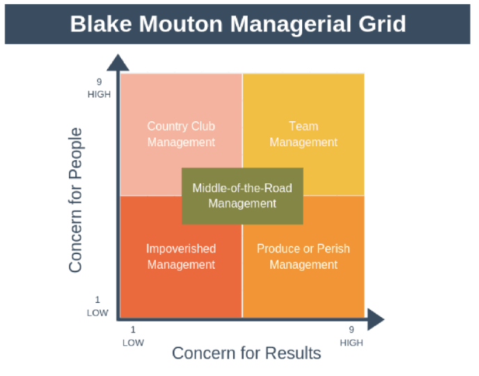
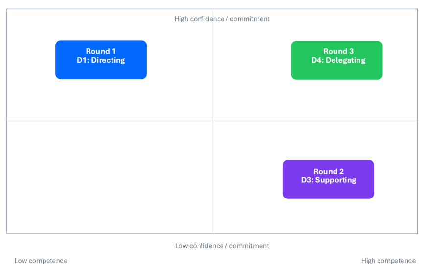
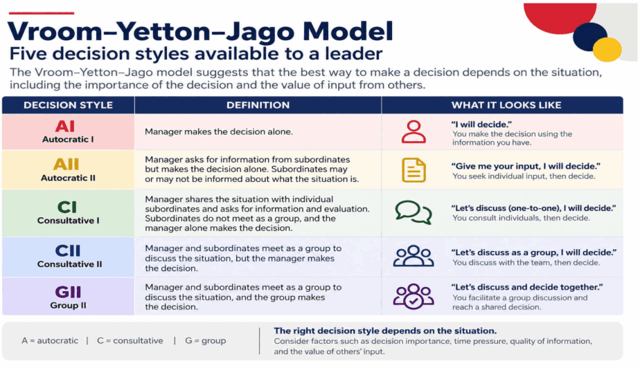

Chủ đề 10: Điều chỉnh phong cách lãnh đạo
Topic 10: Adapt Your Leadership Style — bản đối chiếu Anh – Việt
TS. Tony Nguyen · 38 slide
Quy ước của bản dịch. Mỗi slide là một khối: cột bên trái là nguyên văn tiếng Anh (màu xám), cột bên phải là bản tiếng Việt (màu đen). Nội dung được dịch sát theo từng slide, không lược bỏ. Chữ nằm trong hình đồ hoạ của slide cũng được dịch. Các dòng lặp lại trên hầu hết slide (“RMIT | Zalo”, “me.grow”, “Ready for what’s next”, nhãn chủ đề nhỏ như “Sequence Challenge”, “Situational Leadership”, “Marshmallow Challenge”) không nhắc lại. Số slide theo thứ tự trang của file PDF; từ slide 19 trở đi, số in trên slide gốc lớn hơn thứ tự này 1 đơn vị.
Phần mô tả hình ảnh và các ghi chú về slide gốc được ghi bằng chữ nghiêng màu xám. Đó là ghi chú của bản dịch, không phải nội dung gốc trên slide.
Tên riêng, tên tổ chức và trích dẫn nguồn giữ nguyên. Leader là “người lãnh đạo”, follower là “người đi theo”, readiness là “mức độ sẵn sàng”, competence là “năng lực”, commitment là “cam kết”. Trong hoạt động vẽ, Director là “Người chỉ dẫn”, Drawer là “Người vẽ”. Bốn cách phản hồi của Lãnh đạo theo tình huống: Directing – “Chỉ đạo”, Coaching – giữ nguyên, Supporting – “Hỗ trợ”, Delegating – “Uỷ quyền”. Tên mô hình (Blake Mouton, Vroom–Yetton–Jago), chữ viết tắt SLT và các ký hiệu S1–S4, D1–D4, AI/AII/CI/CII/GII giữ nguyên.
Adapt Your Leadership Style
Điều chỉnh phong cách lãnh đạo
Dr. Tony Nguyen
TS. Tony Nguyen
Session flow — Here’s How We’ll Spend the Next Three Hours
Tiến trình buổi học — Chúng ta sẽ dành ba giờ tới như thế này
| Time · LO Thời gian · MT | English | Tiếng Việt |
| 9:00–9:20 Kick-off | Welcome & Frame | Chào mừng & Câu hỏi định hướng |
| 9:20–9:30 LO1 | The Leadership Grid | Lưới lãnh đạo |
| 9:30–10:00 LO1 | Activity #1: Blind Drawing & Debrief | Hoạt động 1: Vẽ không nhìn & Tổng kết |
| 10:00–11:00 LO1 & LO2 | Activity #2: Sequence Challenge | Hoạt động 2: Thử thách sắp xếp thứ tự |
| 11:00–11:10 LO2 & LO3 | Debrief: Adapting your leadership to your team | Tổng kết: Điều chỉnh cách lãnh đạo theo đội của bạn |
| 11:10–11:25 | Break | Giải lao |
| 11:25–11:40 LO3 | Activity #3: Marshmallow Challenge & Debrief | Hoạt động 3: Thử thách marshmallow & Tổng kết |
| 11:40–12:00 LO4 | Activity #4: Lost at Sea, Debrief & Takeaways | Hoạt động 4: Lạc trên biển, Tổng kết & Bài học rút ra |
LO (Learning Outcome) – mục tiêu học tập, xem slide 03.
By the end of the session — You Will Be Able To…
Kết thúc buổi học — Bạn sẽ có thể…
- Identify and balance broad leadership behaviors.
- Assess the fit between leadership approach and situational demands
- Adapt your behaviors to your followers.
- Select the appropriate level of employee participation in decision-making.
- Nhận diện và cân bằng các nhóm hành vi lãnh đạo chính.
- Đánh giá mức độ phù hợp giữa cách lãnh đạo và yêu cầu của tình huống
- Điều chỉnh hành vi của bạn theo những người đi theo bạn.
- Chọn mức độ tham gia phù hợp của nhân viên vào việc ra quyết định.
Welcome!
Chào mừng!
- Interim Senior Program Manager, Postgraduate Programs, The Business School, RMIT Vietnam
- Ph.D., International Business Administration, Management, Texas A&M International University
- MBA, International Business, University of Houston, Clear Lake
- Quyền Quản lý Chương trình Cấp cao (Interim Senior Program Manager), các Chương trình Sau đại học, Khoa Kinh doanh (The Business School), RMIT Việt Nam
- Tiến sĩ Quản trị Kinh doanh Quốc tế, chuyên ngành Quản lý, Texas A&M International University
- MBA Kinh doanh Quốc tế, University of Houston, Clear Lake
Bên phải slide là ảnh chân dung của diễn giả.
Very excited for this session
Rất hào hứng với buổi học này
Slide gồm hai hình ảnh, không có chữ cần dịch: ảnh chụp một số bài viết/ấn phẩm của diễn giả và ảnh một giảng đường đang có buổi học.
Frame: Who do you credit professionally for your career development so far?
Câu hỏi định hướng: Trong công việc, bạn ghi nhận ai đã góp phần vào sự phát triển sự nghiệp của bạn cho đến nay?
Mini activity #1 (6 mins) — Pair Interviews
Hoạt động nhỏ 1 (6 phút) — Phỏng vấn theo cặp
- Each person share for about 3 minutes while the other listens and takes notes
- The partner takes notes on the story
- Then, switch
- We will share some stories at the workshop level
- Mỗi người chia sẻ khoảng 3 phút trong khi người kia lắng nghe và ghi chép
- Người cùng cặp ghi chép lại câu chuyện
- Sau đó, đổi vai
- Chúng ta sẽ chia sẻ một số câu chuyện với cả lớp
- Who was the person?
- What did the leader actually do?
- How did this help you?
- Why do you think this was needed at the time?
- Người đó là ai?
- Người lãnh đạo đó đã thực sự làm gì?
- Điều đó đã giúp bạn như thế nào?
- Theo bạn, vì sao điều đó lại cần thiết vào thời điểm ấy?
Share your partner’s journey:
Chia sẻ hành trình của người cùng cặp:
If we want to adapt our leadership, what can we adapt?
Nếu muốn điều chỉnh cách lãnh đạo, chúng ta có thể điều chỉnh những gì?
Adapt your leadership — Leadership behaviors: What is it that leaders actually do?
Điều chỉnh cách lãnh đạo — Hành vi lãnh đạo: Người lãnh đạo thực sự làm gì?
Behaviors that focus on structure, efficiency, and meeting specific goals
Các hành vi tập trung vào cấu trúc, hiệu quả và việc đạt các mục tiêu cụ thể
Behaviors that prioritize the follower’s well-being, satisfaction, growth & development
Các hành vi ưu tiên sự khỏe mạnh về thể chất lẫn tinh thần (well-being), sự hài lòng, sự trưởng thành và phát triển của người đi theo
Leadership Grid
Lưới lãnh đạo
- A tool to simply understand your natural leadership style
- Identify yours (5 minutes)
- Reflect and share with us:
- Do you agree with your results?
- In which situations could this style help/hurt you?
- Một công cụ giúp hiểu một cách đơn giản phong cách lãnh đạo tự nhiên của bạn
- Xác định phong cách của bạn (5 phút)
- Suy ngẫm và chia sẻ với chúng tôi:
- Bạn có đồng ý với kết quả của mình không?
- Trong những tình huống nào phong cách này có thể giúp ích/gây hại cho bạn?

Middle-of-the-Road Management
Activity #1 — Blind drawing
Hoạt động 1 — Vẽ không nhìn
Activity #1 (6 mins) — Blind Drawing Round #1: Test your direction-giving skills
Hoạt động 1 (6 phút) — Vẽ không nhìn, Vòng 1: Kiểm tra kỹ năng đưa ra chỉ dẫn
- Work in pairs. One person is the Director and receives an image. The other is the Drawer and cannot see the image.
- Sit back-to-back
- Director start giving instructions. Drawer cannot speak!
- Don’t reveal to each other yet. Please wait for Round #2
- Làm việc theo cặp. Một người là Người chỉ dẫn (Director) và nhận một hình ảnh. Người kia là Người vẽ (Drawer) và không được nhìn thấy hình.
- Ngồi quay lưng vào nhau
- Người chỉ dẫn bắt đầu đưa ra hướng dẫn. Người vẽ không được nói!
- Chưa cho nhau xem kết quả. Hãy chờ đến Vòng 2
- Director may speak.
- Drawer cannot see the image.
- Drawer cannot ask questions.
- Director cannot show the image or physically demonstrate.
- Người chỉ dẫn được nói.
- Người vẽ không được nhìn hình.
- Người vẽ không được đặt câu hỏi.
- Người chỉ dẫn không được cho xem hình hoặc minh hoạ bằng động tác.
Activity #1 (6 mins) — Blind Drawing Round #2: Test your direction-giving skills
Hoạt động 1 (6 phút) — Vẽ không nhìn, Vòng 2: Kiểm tra kỹ năng đưa ra chỉ dẫn
- Work in pairs. One person is the Director and receives an image. The other is the Drawer and cannot see the image.
- Sit back-to-back
- Director start giving instructions. Drawer CAN now speak!
- Don’t reveal to each other yet.
- Làm việc theo cặp. Một người là Người chỉ dẫn (Director) và nhận một hình ảnh. Người kia là Người vẽ (Drawer) và không được nhìn thấy hình.
- Ngồi quay lưng vào nhau
- Người chỉ dẫn bắt đầu đưa ra hướng dẫn. Giờ Người vẽ ĐƯỢC nói!
- Chưa cho nhau xem kết quả.
- Director may speak.
- Drawer cannot see the image.
- Drawer can ask questions.
- Director cannot show the image or physically demonstrate.
- Người chỉ dẫn được nói.
- Người vẽ không được nhìn hình.
- Người vẽ được đặt câu hỏi.
- Người chỉ dẫn không được cho xem hình hoặc minh hoạ bằng động tác.
The Big Reveal: Round 1 — Discuss with your partners your results
Công bố kết quả: Vòng 1 — Thảo luận kết quả với người cùng cặp
- Where did you assume your partner understood what you meant?
- Which words or instructions seemed clear to you but may not have been clear to them?
- Ở chỗ nào bạn đã mặc định rằng người cùng cặp hiểu ý bạn?
- Những từ ngữ hoặc chỉ dẫn nào có vẻ rõ ràng với bạn nhưng có thể không rõ ràng với họ?
- Which instructions were easy to follow?
- Which instructions could have meant different things?
- Chỉ dẫn nào dễ làm theo?
- Chỉ dẫn nào có thể được hiểu theo nhiều nghĩa khác nhau?
The Big Reveal: Round 2 — Share the results
Công bố kết quả: Vòng 2 — Chia sẻ kết quả
- What changed when the Drawer could ask for clarification?
- Which questions helped the Director realize that an instruction was unclear or based on an assumption?
- Did the conversation make the task faster, more accurate, or both? Why?
- Điều gì thay đổi khi Người vẽ được hỏi để làm rõ?
- Câu hỏi nào đã giúp Người chỉ dẫn nhận ra một chỉ dẫn chưa rõ ràng hoặc dựa trên giả định?
- Cuộc trao đổi giúp nhiệm vụ nhanh hơn, chính xác hơn hay cả hai? Vì sao?
Lớp chữ của file PDF ở slide này còn sót một đoạn từ slide 14 (“ns, really? Where did you assume…”), không hiển thị trên slide nên không dịch.
Some key points
Một số điểm chính
- You may not be as clear as you believe you are.
- Clear Direction improves when followers can test, question, and clarify what they have heard.
- Sometimes, direction-giving alone may not be enough.
- Bạn có thể không rõ ràng như bạn nghĩ.
- Chỉ dẫn trở nên rõ ràng hơn khi người đi theo có thể kiểm chứng, đặt câu hỏi và làm rõ những gì họ đã nghe.
- Đôi khi, chỉ đưa ra chỉ dẫn thôi là chưa đủ.
Activity #2 — Sequence Challenge
Hoạt động 2 — Thử thách sắp xếp thứ tự
Three rounds. Same structure.
Ba vòng. Cùng một cấu trúc.
Sequence Challenge — Setup for Round #1
Thử thách sắp xếp thứ tự — Thiết lập cho Vòng 1
- Select one person at your table to be the leader. The rest of you will be the followers.
- Leaders, please follow me.
- Followers, you will receive a hidden card.
- DO NOT SHOW YOUR CARD.
- Listen carefully to instructions.
- You may talk, but do not move at this point.
- Agree and commit to a final sequence amongst yourselves
- You may respectfully disagree with the leader, but he/she makes the final decision
- Chọn một người trong bàn làm người lãnh đạo. Những người còn lại là người đi theo.
- Người lãnh đạo, vui lòng đi theo tôi.
- Người đi theo, các bạn sẽ nhận một lá bài bí mật.
- KHÔNG CHO AI XEM LÁ BÀI CỦA BẠN.
- Lắng nghe kỹ hướng dẫn.
- Bạn được nói chuyện, nhưng lúc này chưa được di chuyển.
- Thống nhất và cam kết với nhau về một thứ tự cuối cùng
- Bạn có thể không đồng ý với người lãnh đạo một cách tôn trọng, nhưng người lãnh đạo là người quyết định cuối cùng
Round 1 reflection — Two perspectives on the same communication breakdown.
Suy ngẫm Vòng 1 — Hai góc nhìn về cùng một sự cố giao tiếp.
When your followers did not respond as expected, what did you assume was happening?
Khi người đi theo không phản hồi như bạn mong đợi, bạn đã cho rằng chuyện gì đang xảy ra?
How did the leader’s direction feel when it did not match your understanding of the task?
Bạn cảm thấy thế nào về chỉ dẫn của người lãnh đạo khi nó không khớp với cách bạn hiểu nhiệm vụ?
Sequence Round 2 — You know the process now, but can you trust the situation?
Vòng 2 — Giờ bạn đã biết quy trình, nhưng bạn có thể tin vào tình huống không?
I may have given someone misleading information.
Or I may have done nothing.
Work with your group. Do not show your card.
Có thể tôi đã đưa cho ai đó thông tin gây hiểu lầm.
Hoặc có thể tôi chẳng làm gì cả.
Làm việc cùng nhóm. Không cho ai xem lá bài của bạn.
Round 2 reflection — What did the group need when confidence was lower?
Suy ngẫm Vòng 2 — Nhóm cần gì khi sự tự tin thấp hơn?
How did you help the group move forward when they had the knowledge, but you did not have the answer?
Bạn đã giúp nhóm tiến lên như thế nào khi họ có kiến thức nhưng bạn lại không có câu trả lời?
When you knew enough to solve the task but were not fully confident, what did you need from your leader?
Khi bạn biết đủ để giải quyết nhiệm vụ nhưng chưa hoàn toàn tự tin, bạn cần gì từ người lãnh đạo?
Sequence Round 3
Vòng 3
Round 3 reflection — What happened when the leader stopped solving?
Suy ngẫm Vòng 3 — Điều gì xảy ra khi người lãnh đạo ngừng tự giải quyết?
What changed when you stopped trying to solve the problem yourself?
Điều gì thay đổi khi bạn ngừng cố tự mình giải quyết vấn đề?
What was it like knowing exactly what to do while your leader continued directing you?
Cảm giác thế nào khi bạn biết chính xác phải làm gì trong khi người lãnh đạo vẫn tiếp tục chỉ đạo bạn?
What changed across the three rounds?
Điều gì đã thay đổi qua ba vòng?
| Round Vòng | English | Tiếng Việt |
| 1 | Follower condition: Confident, but unable to complete the real task What they needed: Direction and clarity | Tình trạng của người đi theo: Tự tin, nhưng không thể hoàn thành nhiệm vụ thực sự Điều họ cần: Chỉ dẫn và sự rõ ràng |
| 2 | Follower condition: Capable, but less confident What they needed: Support and reassurance | Tình trạng của người đi theo: Có năng lực, nhưng kém tự tin hơn Điều họ cần: Hỗ trợ và trấn an |
| 3 | Follower condition: Capable and confident What they needed: Autonomy and space to act | Tình trạng của người đi theo: Có năng lực và tự tin Điều họ cần: Quyền tự chủ và không gian để hành động |
Situational Leadership: diagnose first
Lãnh đạo theo tình huống: chẩn đoán trước
Will they do it? — Commitment and confidence
Họ có sẵn lòng làm không? — Cam kết và sự tự tin
Map the rounds together
Đặt các vòng lên cùng một bản đồ

Slide này ghi D1, D3, D4; slide 27 dùng ký hiệu S1–S4 cho cùng các cách phản hồi. Bản dịch giữ nguyên ký hiệu như trên slide gốc.
The four leadership responses
Bốn cách phản hồi của người lãnh đạo
- S1 Directing — High direction, lower support
- S2 Coaching — High direction, high support
- S3 Supporting — Lower direction, high support
- S4 Delegating — Lower direction, lower support
- S1 Chỉ đạo — Chỉ dẫn cao, hỗ trợ thấp hơn
- S2 Coaching — Chỉ dẫn cao, hỗ trợ cao
- S3 Hỗ trợ — Chỉ dẫn thấp hơn, hỗ trợ cao
- S4 Uỷ quyền — Chỉ dẫn thấp hơn, hỗ trợ thấp hơn
What was unrealistic about the sequence activity?
Điều gì trong hoạt động sắp xếp thứ tự là không thực tế?
Whew – Take a 15-Minute Break
Phù – Nghỉ giải lao 15 phút
Activity #3 — Marshmallow Challenge
Hoạt động 3 — Thử thách marshmallow
The challenge
Thử thách
- 20 sticks of uncooked spaghetti
- 1 yard of masking tape
- 1 yard of string
- 1 standard-size marshmallow
- 20 sợi mì spaghetti khô
- 1 yard (khoảng 0,9 m) băng dính giấy
- 1 yard dây
- 1 viên marshmallow cỡ tiêu chuẩn
- Tallest structure
- Freestanding
- Entire marshmallow on top
- Công trình cao nhất
- Tự đứng
- Nguyên viên marshmallow trên đỉnh
Teams of 3 or 4
Đội 3 hoặc 4 người
| Role Vai | English | Tiếng Việt |
| 1 | Leader Can see and talk Cannot touch materials | Người lãnh đạo Được nhìn và nói Không được chạm vào vật liệu |
| 2 | Restricted follower Can touch and talk Cannot look | Người đi theo bị hạn chế Được chạm và nói Không được nhìn |
| 3 | Advisor follower Can see and talk Cannot touch | Người đi theo cố vấn Được nhìn và nói Không được chạm |
| 4 | Builder follower Can see, talk, and touch Relatively unrestricted | Người đi theo thi công Được nhìn, nói và chạm Gần như không bị hạn chế |
The hidden leadership challenge
Thử thách lãnh đạo ẩn giấu
Some will require more effort, communication, and adaptation.
Một số người sẽ đòi hỏi nhiều nỗ lực, giao tiếp và điều chỉnh hơn.
Marshmallow debrief
Tổng kết thử thách marshmallow
- Did everyone need the same type or amount of leadership?
- Who became easiest to rely on?
- Who became easiest to ignore?
- What helped everyone contribute?
- Mọi người có cần cùng một kiểu hoặc cùng một mức độ lãnh đạo không?
- Ai trở thành người dễ dựa vào nhất?
- Ai trở thành người dễ bị bỏ qua nhất?
- Điều gì đã giúp mọi người cùng đóng góp?
Activity #4 — Lost at Sea
Hoạt động 4 — Lạc trên biển
A relevant question is: How much involvement should employees have in decision-making?
Một câu hỏi liên quan là: Nhân viên nên tham gia vào việc ra quyết định ở mức độ nào?
Vroom–Yetton–Jago Model — Five decision styles available to a leader
Mô hình Vroom–Yetton–Jago — Năm phong cách ra quyết định mà người lãnh đạo có thể dùng
Toàn bộ slide là một hình đồ hoạ; chữ trong hình được dịch theo cấu trúc hình ở khung dưới. Mỗi dòng gồm: phong cách ra quyết định (Decision style), định nghĩa (Definition) và biểu hiện thực tế (What it looks like).
Consider factors such as decision importance, time pressure, quality of information, and the value of others’ input.
Hãy cân nhắc các yếu tố như tầm quan trọng của quyết định, áp lực thời gian, chất lượng thông tin và giá trị của ý kiến từ người khác.

Wrap-up — Remember These Four Things Before You Go.
Tổng kết — Hãy nhớ bốn điều này trước khi ra về.
- Diagnose before you lead
- Clarity is not the same as talking more
- Different people need different things at different time
- Match participation to the decision
- Chẩn đoán trước khi lãnh đạo
- Rõ ràng không có nghĩa là nói nhiều hơn
- Những người khác nhau cần những điều khác nhau vào những thời điểm khác nhau
- Chọn mức độ tham gia phù hợp với từng quyết định
Academic sources cited in this deck — These Are the Sources Behind Today’s Session.
Các nguồn học thuật được trích dẫn trong bài — Đây là các nguồn làm nền tảng cho buổi học hôm nay.
- Blake, R. R., & Mouton, J. S. (1964). The managerial grid: Key orientations for achieving production through people. Gulf Publishing.
- Fleishman, E. A. (1953). Leadership climate, human relations training, and supervisory behavior. Personnel Psychology, 6(2), 205–222. https://doi.org/10.1111/j.1744-6570.1953.tb01040.x
- Hemphill, J. K., & Coons, A. E. (1957). Development of the Leader Behavior Description Questionnaire. In R. M. Stogdill & A. E. Coons (Eds.), Leader behavior: Its description and measurement (pp. 6–38). Bureau of Business Research, Ohio State University.
- Hersey, P., & Blanchard, K. H. (1969). Management of organizational behavior: Utilizing human resources. Prentice-Hall.
- Katz, D., Maccoby, N., & Morse, N. C. (1950). Productivity, supervision and morale in an office situation. Institute for Social Research, University of Michigan.
- Katz, D., Maccoby, N., Gurin, G., & Floor, L. G. (1951). Productivity, supervision and morale among railroad workers. Institute for Social Research, University of Michigan.
- Vroom, V. H., & Yetton, P. W. (1973). Leadership and decision-making. University of Pittsburgh Press
Danh mục tài liệu tham khảo giữ nguyên văn tiếng Anh. Một số chỗ bị tách chữ trong file PDF (“Pub lishing”, “Soci al”, “Institu te”) đã được viết liền lại.